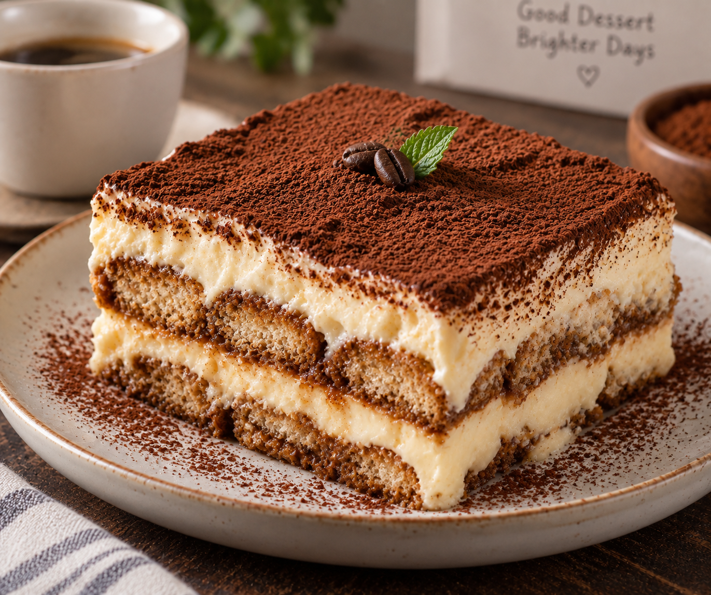

Back to Home
Tiramisu

Description
A classic Italian dessert made with coffee-soaked ladyfingers
and layers of smooth mascarpone cream. It is finished with cocoa
powder for a rich coffee and chocolate flavor.
Ingredients
For the Cream:
- 250g mascarpone cheese
- 1 cup heavy whipping cream
- ⅓ cup white sugar
- 1 teaspoon vanilla extract
For the Coffee Layer:
- 1 cup strong brewed coffee or espresso, cooled
- About 200g ladyfinger biscuits
For the Topping:
- Unsweetened cocoa powder
- Chocolate shavings (optional)
Steps
- Brew the coffee and allow it to cool completely.
- Beat the heavy cream and sugar until soft peaks form.
- Add the mascarpone cheese and vanilla.
- Gently mix until the cream is smooth and thick.
- Quickly dip each ladyfinger into the cooled coffee. Do not soak them for too long.
- Arrange one layer of dipped ladyfingers in a dish.
- Spread half of the mascarpone mixture over the ladyfingers.
- Add another layer of coffee-dipped ladyfingers.
- Spread the remaining mascarpone mixture on top.
- Cover and refrigerate for at least 4-6 hours.
- Dust the top with cocoa powder before serving.
- Add chocolate shavings if desired.